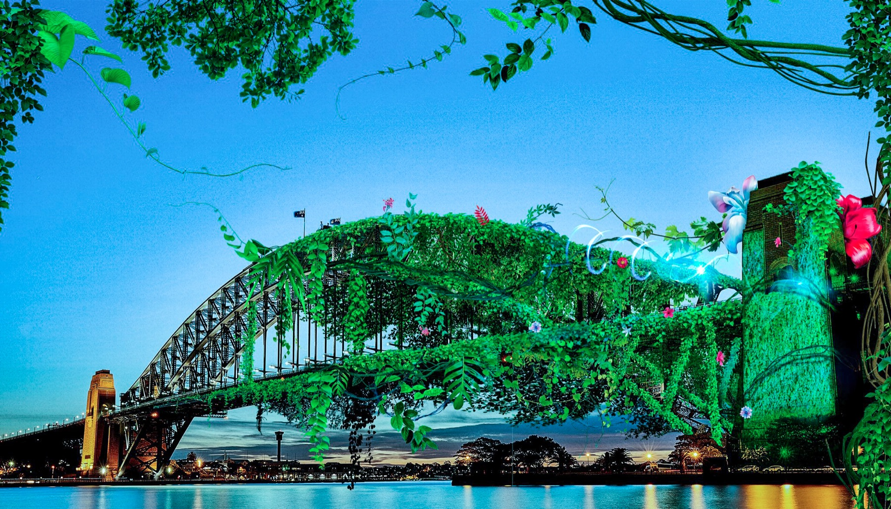
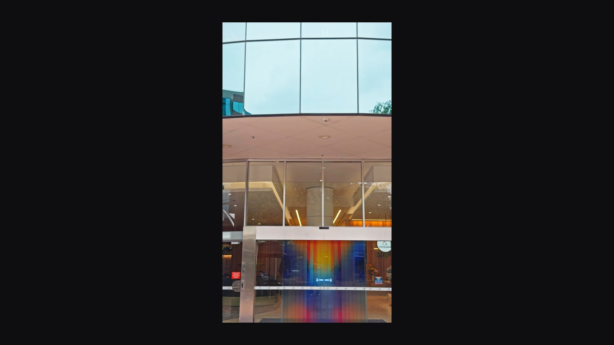

Raoni Lima.
Multidisciplinary creative, educator, and AI leader based in Sydney.

Craft, storytelling, and technology have always been one practice.
Across 20+ years of hands-on work, I have delivered campaigns through design, motion, editing, and creative art direction. For the last four years, my focus has moved deeply into generative AI and emerging technology.
I build scalable hybrid workflows that connect new tools with real production needs, with a particular curiosity for node-based systems and vibe-coding.
Turning experimentation into real creative systems.
At Havas, I spearhead AI implementation for the new studio while continuing to work across enterprise workshops, workflow consulting, global brand production, and hybrid TVCs.
As Course Director for Figma Weave Live Studio, created with Lighthouse AI Academy and sponsored by Figma, I lead an eight-week hands-on cohort of live builds, Q&A sessions, practical assignments, and portfolio-ready outcomes.
I am also recognised as a Top 1% AI Mentor on ADPList, with 60+ one-to-one sessions supporting creatives, founders, leaders, and teams with workflows, career direction, and implementation.
Experiments are part of the practice.
Games and creative tools give me a place to learn in public, test how AI changes the making process, and turn ideas into something people can actually use.
Dog vs Cats
A compact mouse-controlled yard game about listening for cats, barking at the right moment, and learning game development by shipping.
RaoLatro
My first playable Lua and LÖVE2D experiment, using AI as a co-pilot while learning game states, scoring, input, animation, debugging, and Git.
AE Script Panels
A public collection of After Effects ScriptUI experiments built around practical production tasks, animation, cleanup, and repeatable motion workflows.
Master Script Pack
An After Effects ScriptUI panel that connects my motion background with a long-running interest in practical workflow tools.
GrooveBound WIP
The earlier LÖVE2D learning build where waves, upgrades, drones, area attacks, UI, and rhythm ideas began taking playable form.
Groove Bound Archive
A public snapshot of the first two prototype branches, preserving the rough experiments that led into the current game system.
Artworks, systems, and visual experiments.
The practice moves between image making, speculative worlds, node graphs, motion installations, and playful studies. These are selected from my own R&D and archive.





RAOVERSE: Subjekt 001, 002, 003.
Three personal NFT artworks exploring identity, containment, synthetic life, and speculative systems beyond the game world.


Games are where all the disciplines meet.
Groove Bound is a personal laboratory for world building, system design, motion, sound, code, character, and play. It lets me explore vibe-coding while keeping the final experience grounded in a coherent creative direction.
Build the next system together.
Connect with Raoni for creative AI leadership, enterprise workshops, workflow consulting, mentorship, or the next Groove Bound build.